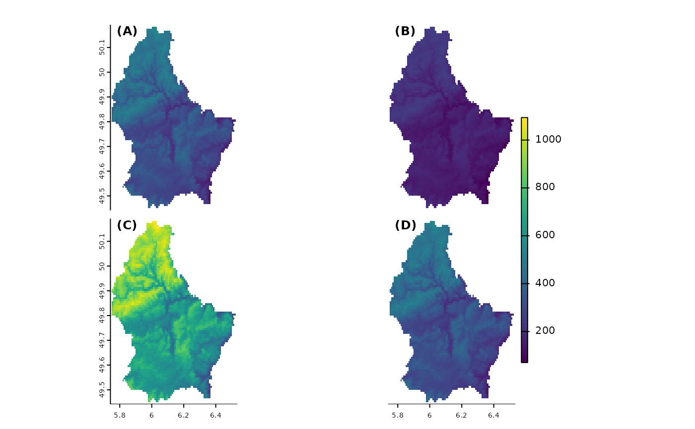

Map panel
panel.RdShow multiple maps that share a single legend.
Arguments
- x
SpatRaster
- main
character. Main plot titles (one for each layer to be plotted). You can use arguments
cex.main,font.main,col.mainto change the appearance- loc.main
numeric of character to set the location of the main title. Either two coordinates, or a character value such as "topleft")
- nc
positive integer. Optional. The number of columns to divide the plotting device in (when plotting multiple layers)
- nr
positive integer. Optional. The number of rows to divide the plotting device in (when plotting multiple layers)
- maxnl
positive integer. Maximum number of layers to plot (for a multi-layer object)
- maxcell
positive integer. Maximum number of cells to use for the plot
- box
logical. Should a box be drawn around the map?
- plg
see
plot- pax
see
plot- range
numeric. minimum and maximum values to be used for the continuous legend
- halo
logical. Use a halo around main (the title)?
- type
character. Type of map/legend. One of "continuous", "classes", or "interval". If not specified, the type is chosen based on the data
- ...
arguments passed to
plot("SpatRaster", "numeric")and additional graphical arguments
See also
plot and see rasterVis::levelplot and tidyterra::autoplot for more sophisticated panel plots.
Examples
r <- rast(system.file("ex/elev.tif", package="terra"))
v <- vect(system.file("ex/lux.shp", package="terra"))
x <- c(r, r/2, r*2, r)
names(x) <- paste0("(", LETTERS[1:4], ")")
panel(x)

panel(x, fun=function() lines(v), loc.main="topright")